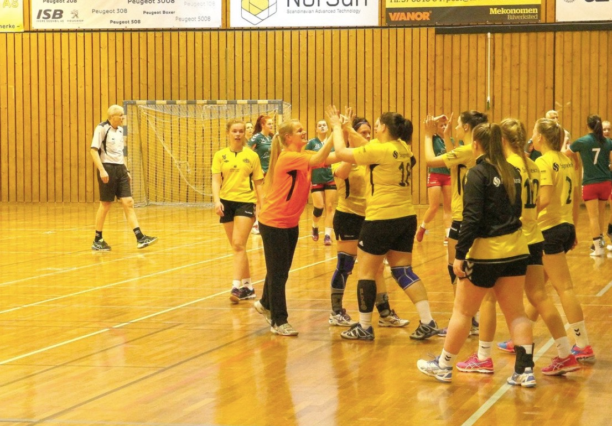

Eg har spelt handball i 7 år og er også dommar her. I dag spelar eg på Syril sitt damelag i 4 divisjon. Her ligg me cirka midt på tabellen og blir bedre og bedre etter kvar kamp som går. Me har ein god trenar som er flink til å utvikle oss. Neste kamp er mot Sogndal 2, som me vant mot sist kamp.
|
|
|---|